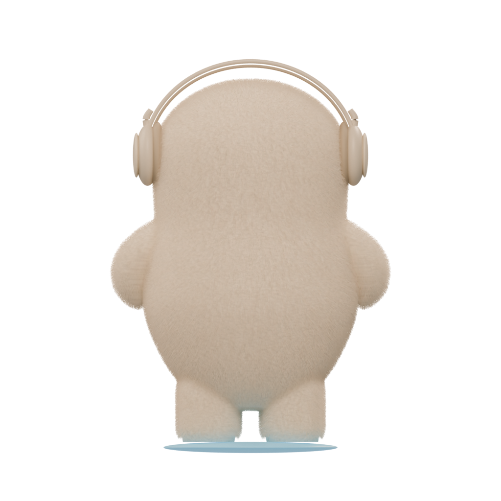
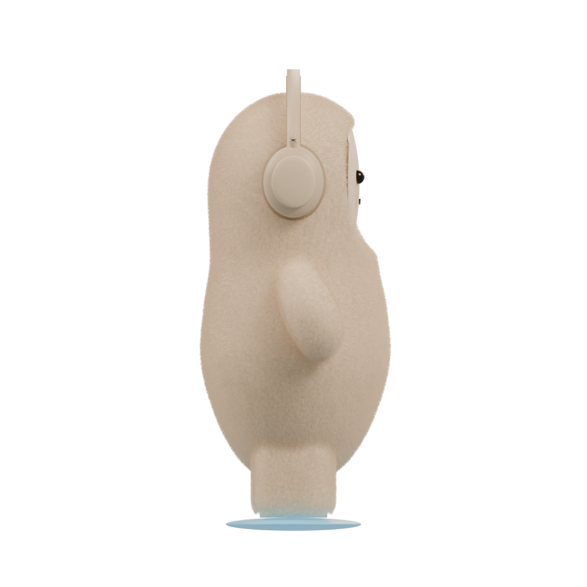
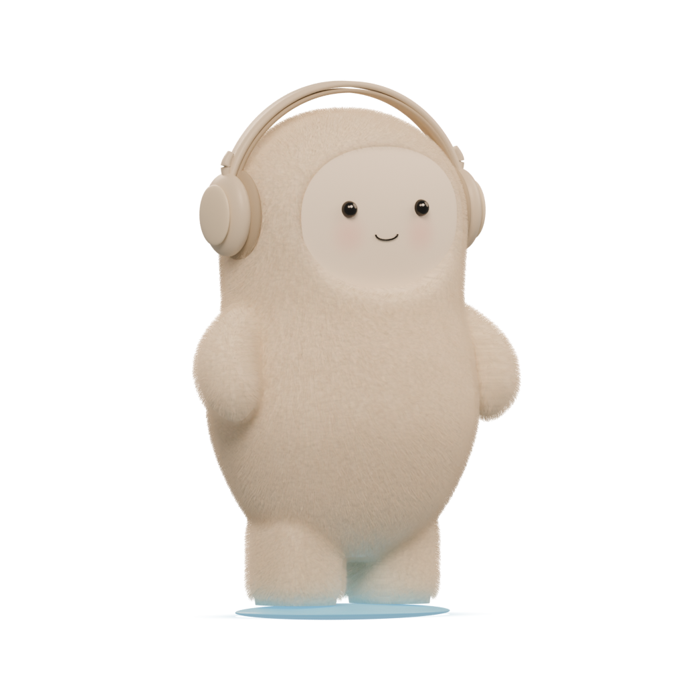
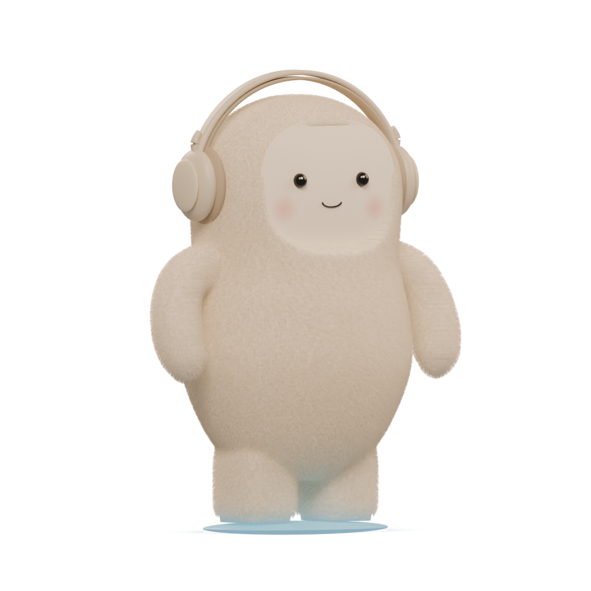
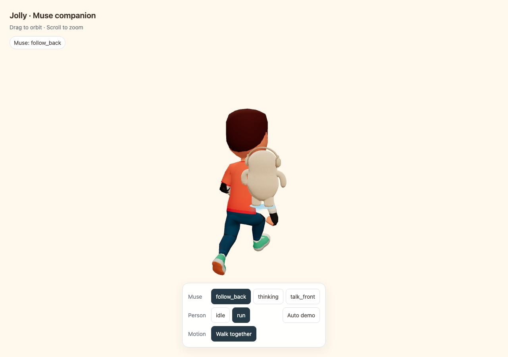
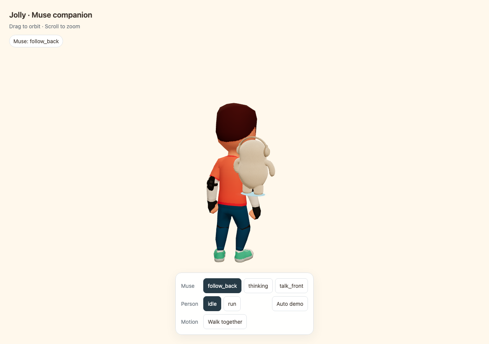
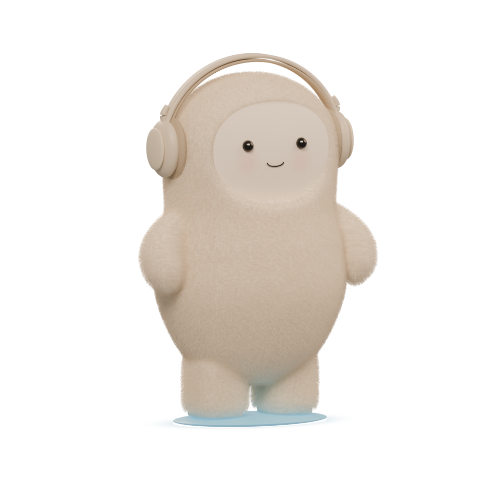

Subtle pear-shaped, continuous body · inset oval face and stronger blush · fine fleece and hair · thin blue floating platform. Transparent 1024 × 1024 renders; click an image for full resolution.



Refined against the attached plush photos. The supplied polar-fleece maps provide the coat's cream micro-texture, normal detail, and roughness. Blender adds 200,000 fine tapered hairs; the portable GLB retains 26,000 thin mesh fibers. The old broad triangular clumps are removed. Blender has denser silhouette fuzz and richer light scattering than the browser.
The supplied Blender 4.X shell-fur graph is retained as an optional disabled modifier preset; the 3.X version was inspected as a legacy alternative. No embedded scripts were run. The final render uses the fleece maps and actual fine fibers.




Remaining approximations: fine-hair density and light transport differ in GLB; the coat is reconstructed rather than recovered original geometry. The skater's geometry, rig, skin, scale, and animations are preserved. No orb, cape, star, or Spotify plaque.